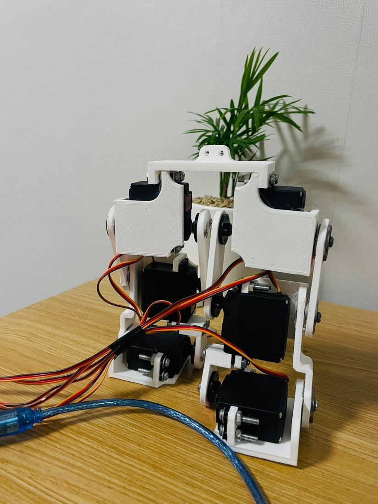
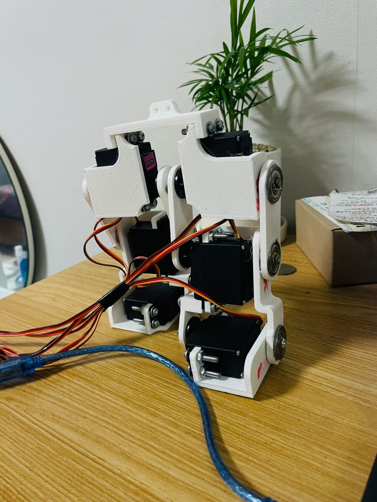
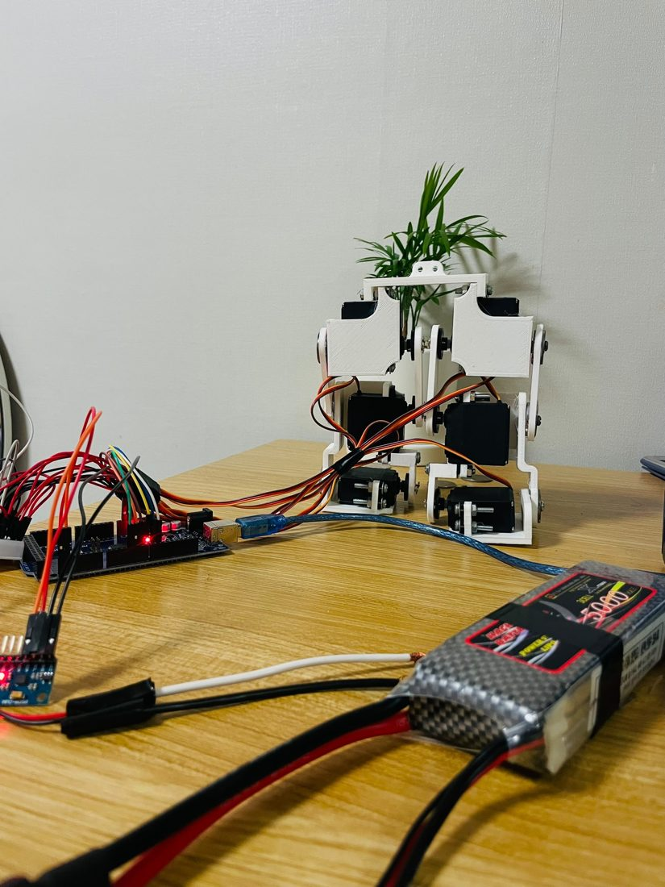
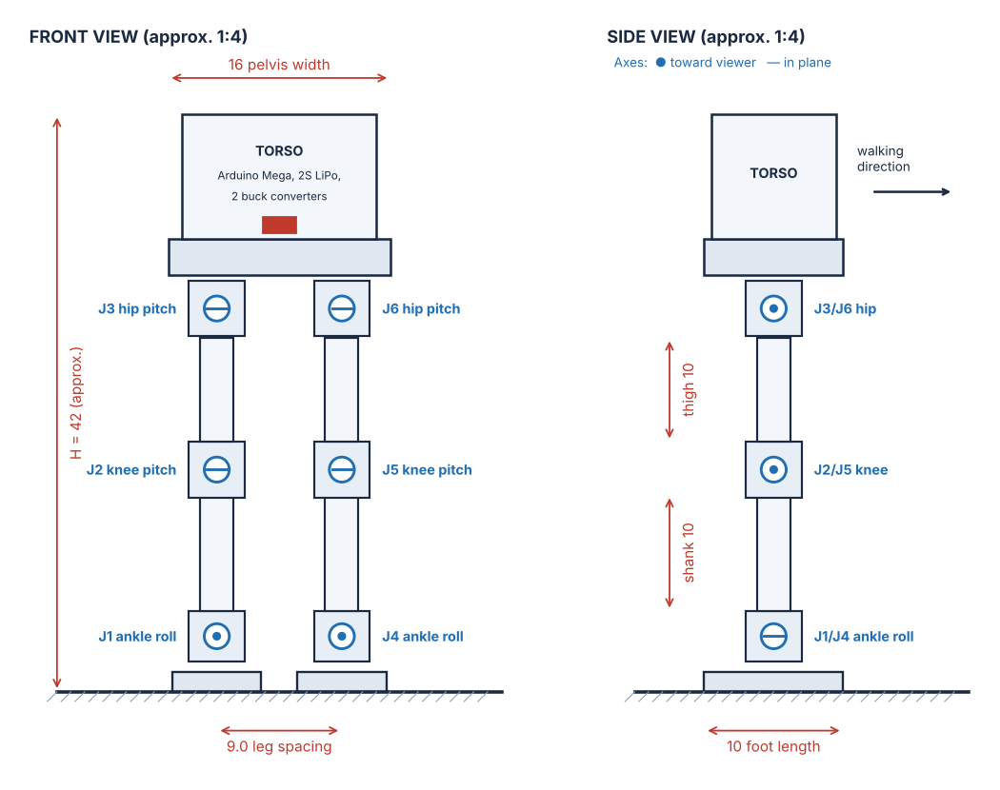
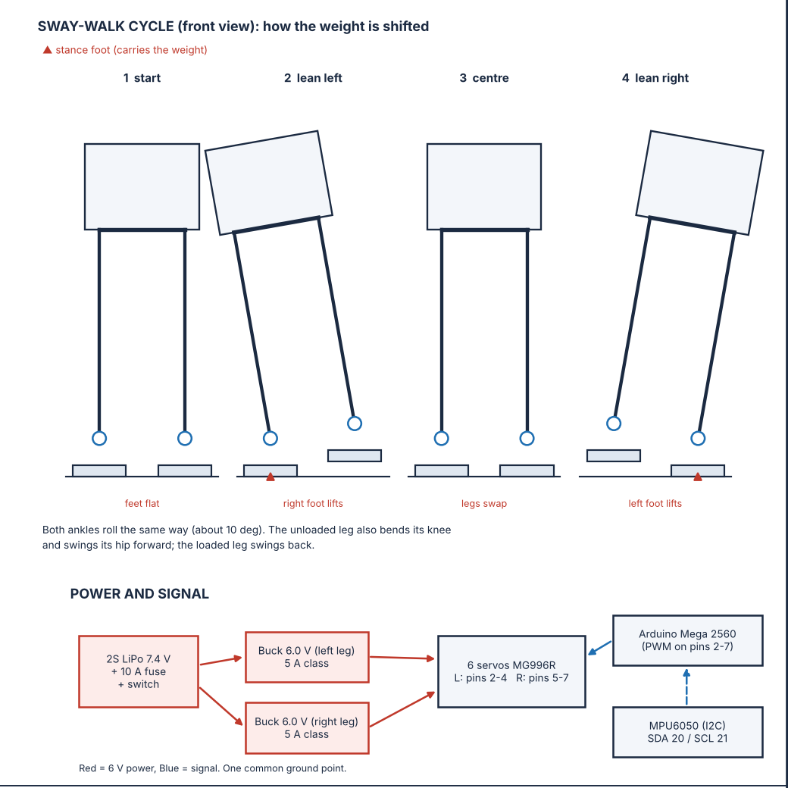

Simulation replay
The body position, height and tilt are the values logged by PyBullet at 0.1 s steps. The leg angles are rebuilt from the gait equations of the thesis and drawn as a flat side view, so the picture is a schematic, not a rendering of the physics engine. Both legs are shown, the far leg lighter.
Results of this run
All twelve runs
The previous project: the physical robot
In the previous semester I built a small two-legged robot. It has a 3D-printed frame with ball bearings at the joints, six MG996R servos (hip, knee and ankle on each leg), an Arduino Mega 2560, an MPU6050 tilt sensor and a LiPo battery. The photos and the video below are from that build.



The robot moving on the desk.
Why it moves but does not walk
All six joints bend in the same plane, so the robot cannot shift its weight sideways to lift one foot. I also estimate that the servos are close to their torque limit for a robot of this size. I could not measure either on the robot, so these are conclusions from the design and from calculation. The original Arduino code was lost, so the thesis includes a new implementation instead.
The next robot (proposal, not built yet)
Same six servos, new job: each ankle becomes a roll joint so the body can lean over one foot, and the leg swings while the other foot is loaded. This is a design only. It has not been tested on hardware.


What was simulated
- A six-joint biped (hip, knee, ankle on each leg), 2.10 kg, in PyBullet at 240 Hz.
- Motors limited to 2.0 N·m. A run ends when the body falls below 0.35 m or tilts past 45°.
- Fixed controller: same gait frequency everywhere. Adaptive controller: f = f0·√(g / 9.81).
- The first hand-chosen gait fell in all six runs. After a separate parameter search both controllers stayed up for 12 s.
What this does not show
- Nothing here was measured on the real robot. The prototype did not walk.
- Each condition was simulated once.
- The simulated motors are about twice as strong as the real servos.
Run the real simulation
This page replays saved results. The physics engine runs in Python, so to run it yourself use Google Colab (no install) or your own computer.
Open in Google Colab View code on GitHub
cd simulation
pip install -r requirements.txt
python simulate.py --gravity Moon --controller Adaptive --gait tuned --guiDrop --gui to run without the 3D window. Results are saved as CSV files and graphs.